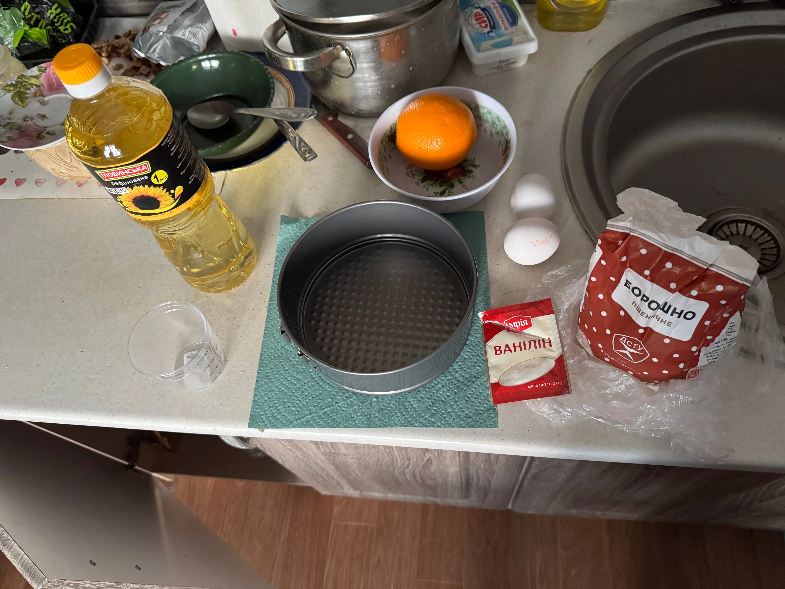

Пиріг
Пиріг з картоплею та печінкою/грибами/м'ясом чи з іншою начинкою.
Солодкий Пиріг
Пиріг з маком/вишнею чи з іншою солодкою начинкою.
Кекс
Апельсинові, звичайні чи інші кекси.
Піца
Домашні піци на лавашах, або на тісті з кастомними начинками.
Торти
Торти на мої др, та мною приготовленні.
Оладки
Оладки з яблука, картопляні, кабачкові, класичні та інші.
Відбивні
Відбивні з курячого філе.
Котлети
Натушити котлет та можно забуди про готовку чогось до гарніру.
Тефтелі
Зразу гарнір та м'ясо.
М'ясо
Четвертина, грудка, філе, ребра, спинка, ножки 💯.
Гриби
Просто гриби, ну жарені.
Хачапурі
Хачапурі з сиром та з любою іншою начинкою.
Печінка
Куряча печінка, хотілось би ще кролячу.
Плов
Плов з м'ясом, з тушонкою, з грибами та іншими інгрідієнтами.
Риба
Риба любих сортів.

Сирні палочки
Сирні палочки смачні навіть з дешевого сиру.
Картоха
Картопля Фрі, пюре, молода, селяньська.
Пельмені
Краще купити в магазині, чим їх ліпити
Інгредієнти
на одну порцію
- Творог - 150г
- Мука - 150г
- Олія - 3 ст. ложки
- Молоко або вода - 3 ст. ложки
- Цукор - 2 ст. ложки
- Розпушувач тіста - 1 ч. ложка
- Сіль - шіпка
- Печінка - 300г
- Картоха - 3 середніх
- Цибуля - 2 середніх
- Сіль - 1/2 ст. ложки
Тісто:
Начинка (печінка):
Хоба як умію
Ізбиваєм тісто
Смакота 😋
Приготування
1. Відварити або пожарити печінку і добавити шіпку солі.
2. Начистити цибулю та картоплю маленькими кусками. Спершу вкинути цибулю, трохи піджаритися, а потім на неї картоплю добавивши пів столової ложки солі, жарити до півготовності. Висипати в тарілку та поставити охолоджуватися. (Можна на балкон)

3. Висипаємо в тару творог, муку з розпушувачем, добавляємо 3 столових ложки олії та молока, далі 2 столових ложки цукру з шіпоткою солі. Замісюємо тісто спочатку ложкою, а потім руками і даємо відпочити на 10 хвилин.
4. Коли тісто відпочине, викладаємо його на робочу поверхню та розділяємо тісто на 2 частини: одну частину зробити меншою. Розкатуємо їх каталкою для форми, одну з розрахунком на стінки, другу щоб закрити зверху. (Якщо немає каталки то формуємо тісто в формі).
5. Бризкаємо по всій формі трохи олії, або змащуємо. Розрівнюємо більшу частину тіста по формі і рівняємо стінки. Далі змішуємо остиглу начинку і висипаємо в форму. Якщо начинки вийшло багато то з'їжте її ¯\_(ツ)_/¯.
6. Ложимо верх і з'єднуємо шмати шляхом пощіпування по краях та украшаємо як захочете.
7. Розігріваємо духовку та запихаємо пиріг в неї. Ставимо 180° градусів і 40 хвилин. Коли пройде десь 10-15 хвилин - накрити папером для запікання, або фольгою. (Я поклав 4 кусочки картохи намазавши олією, щоб плівка не піднімалась).
Після того, як вийде час, зніміть плівку та поставте ще на 5-10 хвилин. (Поки можна схавати ту картоху зверху, тільки посоліть).
8. Все, розріжте, нехай трохи вистигне і можно їсти.
Інгредієнти
- Творог - 100г
- Мука - 100г
- Олія - 2 ст. ложки
- Молоко або вода - 2 ст. ложки
- Цукор - 1 ст. ложки
- Розпушувач тіста - 1 ч. ложка
- Сіль - шіпка
- Мак - до 300г
Тісто:
Начинка (Макова):
Приготування

1. У мене начинка макова з АТБ, можно любу другу солодку, вишня, яблуко, груша, творог. Можно також зробити і солодку картоплю.
2. Висипаємо в тару творог, муку з розпушувачем, добавляємо олії та молока, далі 1 столову ложку цукру з шіпоткою солі. Замісюємо тісто спочатку ложкою, а потім руками і даємо відпочити на 10 хвилин.
3. Коли тісто відпочине, викладаємо його на робочу поверхню та розділяємо тісто на 2 частини: одну частину зробити меншою. Розкатуємо їх каталкою для форми, одну з розрахунком на стінки, другу щоб закрити зверху. (Якщо немає каталки то формуємо тісто в формі).
4. Бризкаємо по всій формі трохи олії, або змащуємо. Розрівнюємо більшу частину тіста по формі і рівняємо стінки. Далі видавлюємо з пачки мак, він уже йже з сахаром, тому в цей не потрібно добавляти. Там уже дивіться по начинці, куди треба, куди не треба доваляти.
5. Да.. на вид мак не дуже в формі.
6. Ложимо верх і з'єднуємо шмати шляхом пощіпування по краях та украшаємо як захочете.
7. Розігріваємо духовку та запихаємо пиріг в неї. Ставимо 180° градусів і 40 хвилин. Коли пройде десь 10-15 хвилин - накрити папером для запікання, або фольгою. (Я поклав 4 кусочки картохи намазавши олією, щоб плівка не піднімалась). Після того, як вийде час, зніміть плівку та поставте ще на 5-10 хвилин. (Поки можна схавати ту картоху зверху, тільки посоліть).
8. Все, розріжте, нехай трохи вистигне і можно їсти.
Інгредієнти
- Апельсин - 1-2 штуки
- Цукор - 200г
- Яйця - 0-3 штук
- Ваніль - шіпка
- Мука - 400г
- Розпушува тіста - 10г
- Олія - 150мл
- Вода - 150мл

Приготування

1. Є 2 спосіба приготування. Легше буде з блендером.
Без:
Натерти апельсинову цедру та вичавити апельсиновий сік, десь повинно бути 200мл~ і висипати, вилити всі інші інгрідієнти і перемішати.
З блендером:
Повкидати тупо всі інгрідієнти, як і цілий апельсин, розрізавши його на дві частини, і десь 50 секунд перемелювати в одну жижу.
2. Закинути готову масу в форму.
3. Розігріваємо духовку та запихаємо в неї кекс. Ставимо 180° градусів і 45 хвилин. Коли пройде десь 10 хвилин - накрити папером для запікання, або фольгою. (Я поклав 4 кусочки картохи намазавши олією, щоб плівка не піднімалась). Після того, як вийде час, зніміть плівку та поставте ще на 10 хвилин. (Поки можна схавати ту картоху зверху, тільки посоліть).
4. Все, діставайте і хавайте, тільки нехай остине.
Інгредієнти
- Лаваш - 2 штуки
- Помідор - 1 середній
- Сир - по смаку
- Перець - 1/2 штуки
- Сольоний огірок - 1 штука
- Ковбаса/Сосиски - по смаку
- Соуси - по смаку
Приготування
1. Нарізати помідори, перець, огірки та ковбасу/сосиски і потерти сир.
2. Викласти на розігріту сковорідку послідовно: ковбасу на неї помідори, перець, ковбасу/сосиски та огірки, а зверху посипати сиром, все це на середньому вогні.

3. Небагато намазати лаваши соусами та покласти зверху на все і трохи попридавлювати, щоб сир прилип до лавашу. Накрити кришкою і на маленькому вогні трохи протушити.
4. Відкриваєм кришку та ложимо велику тарілку в сковорідку і швидко перевертаєм її, але аккуратно і можна їсти. Можна також покришити зелень.
Інгредієнти
- Мука - 220г
- Яйця - 1 штука
- Цукор - 2 ст. ложки
- Йогурт/Кефір - 250мл
- Яблука - 2 середніх
- Сіль - 1/2 ч. ложки
- Розпушувач тіста - 1 ч. ложка
Приготування
1. Взбовтуєм яйце та добавляєм 2 столових ложки цукру.
2. Добавляєм йогурту/кефіра і розмішуємо.
3. Зчесуєм шкурку яблука та вирізаємо середину та натираємо їх на тертушкі.

4. Змішуємо та перемішуємо.

5. Далі в муку добавляєм пів чайної ложки солі і 1 чайну ложку розпушувача.
6. Висипаємо муку в першу тару та добре перемішуємо, добавляємо муки, якщо вийшло рідке.
7. Ложкою ложемо на розігріту пательню, в якій вже є олія, те що взбовтали, по всій сковородці, але щоб вони не касалися друг друга та жаримо на середньому вогні.
8. Коли вже бока почнуть румянитися, потрібно оладки перевернути на іншу сторону.
9. Почекати поки інша сторона доготовиться і можна подавати до столу зі сметаною.
Btw, ось мій відео урок:
Інгредієнти
- Філе - 1кг
- Яйця - 2 штуки
- Сіль - по смаку
- Чорний перець - по смаку
- Паніровачні сухарі - 200г
Приготування
1. Ріжемо філе поперек на 2 частини та потім ріжемо ще десь на двоє рівних частин. Берем молоток та відбиваємо їх добренько, але над-то сильно.
2. Робимо кляр з яєць, солі та перцю і перемішуємо виделкою. Вмачуємо відбиті куски в кляр і в паніровку з двох боків та викладаємо на розігріту сковорідку з олією.
3. Жаримо на великому вогні і колихаємо сковорідку, щоб вони не пригоряли і обжарювалися боки. Перевертаємо коли вже боки будуть трохи румянитися.
4. Повторюємо це поки не закінчиться м'ясо, викладаємо в каструлю, добавляємо чуть води на її дно, десь 120мл та тушимо відбивні хвилин на 15 і можна подавати з гарніром.

Інгредієнти
- Філе - 1кг
- Яйця - 1 штука
- Сіль - 1 ст. ложка
- Чорний перець - по смаку
- Паніровачні сухарі - 200г
- Цибуля - 5 середніх
- Картопля - 2 середніх
- Батон - пів батону
- Часник - 5 зубчиків
Приготування
1. Пропускаємо та крутимо філе та всі інші інгрідієнти через м'ясорубку.
2. Добавляємо яйце, сіль та чорний перець та все замішуємо руками.
3. Формуємо руками котлети в паніровочні сухарі та на розігріту сковорідку з олією і жаримо на середньому вогні. Переварачуємо на іншу сторону, коли бока підрумяняться.
4. Після того як дві сторони піджаряться, кладемо в каструлю і добавляємо 100мл на дно і тушимо 15 хвилин.
5. Все можна подавати до столу.
Інгредієнти
- Філе - 1кг
- Яйця - 1 штука
- Сіль - 1 ст. ложка
- Чорний перець - по смаку
- Цибуля - 5 середніх
- Часник - 5 зубчиків
- Рис - 300г
- Морква - 2 середніх
Приготування
1. Зварити рис до напівготовності.
2. Пропускаємо та крутимо філе, цибулю та часник через м'ясорубку.
3. Добавляємо яйце, рис, сіль та чорний перець та все замішуємо руками.
4. Руками робимо круглі тефтелі та кладемо на розігріту сковорідку з олією і жаримо на середньому вогні. Переварачуємо на іншу сторону, коли бока підрумяняться.
5. Після того як дві сторони піджаряться, кладемо в каструлю і добавляємо 100мл на дно і тушимо 15 хвилин.
6. Все можна подавати до столу.
Інгредієнти
- М'ясо - любе
- Приправи - любі
Приготування
Четвертини/гомілки/спинка/стегна:
1. Помити та замаринувати спеціями, добре перемішавши та дати постояти щонайменш годину. Можна також не маринувати, а вже солити і перчити на сковорорідці на кожний кусок.
2. Закинути куски на розігріту сковорідку та жарити на великому вогні з двох сторін.
3. Коли буде готово з двух сторін, відставити сковорідку в сторону, щоб олія остигла, та налити туди гарячої води, щоб тушкувалося (повернути сковорідку на вогонь) 15-20 хвилин. Якщо кусків багато, то виложити їх в каструлю та тушити там.
Варіант смаженого мʼяса для аерогриля:
1. Краще всього замаринувати та дати постояти декілька годин.
2. Побризкати трохи стінки ковша олією, та виложити туди мʼясо і теж зверу пхобризкати маленькою кількістю олії, якщо в маринаді її не було. Ставимо 200 градусів і 50 хвилин. Після 15 хвилин потрібно накрити мʼясо фольгою, щоб не пригоріло, та зняти за 5-10 хвилин до кінця.
3. Витягуємо і можна їсти.
Варене філе:
1. Помити та зробити декілька розрізів.
2. Закинути у киплячу воду, трохи посоліть та поваріть хвилин 15-20 і можна їсти корисне та білкове фарене філе.
Говяжі міні кусочки:
1. Добре промити, викласти на розігріту сковорідку та посолоти кожен кусок, також добавити інші спеції.
2. Пожарити з іншої сторони, посолити та модна їсти.
Телячі стейки:
1. Купити готові, або нарізати мʼясо на стейкообразні форми. Промити та закинути в киплячу олією сковорідку та добре посолити, також добавити спеції.
2. Жарити на великому вогні з двох сторін та помішувати сковорідку. Для Rare - (2 хвилини), Medium Rare - (3 хвилини), Medium - (4-5 хвилини), Well Done - (6-7 хвилин) З КОЖНОГО БОКУ!
Ліниві котлети:
1. Порізати на маленькі кусочки філе, або інше м'яке м'ясо, закинути в муку з сілью та спеціями і добавити яйце та все добре перемішати.
2. Викласти на сформовані котлети на розігріту сковорідку з олією та жарити до готовності.
Інгредієнти
- Гриби - 400г
- Сіль - за смаком
Приготування
.gif)
1. Добре промити та нарізати не дуже тонкими кусочками.
2. Викласти в розігріту пательню з олією та добавити сіль за смаком. Можна також добавити цибулі.
3. Жарити десь 10-15 хвилин до золотистого кольору на середньому вогні і можна куштувати.
Інгредієнти
- Мука - 400г
- Кефір – 250 мл
- Яйце – 1 штука
- Сіль – 1/2 ч. ложки
- Цукор – 1 ч. ложка
- Олія – 2 ст. ложки
- Розпушувач тіста – 1 ч. ложка
- Сир - 400г
- Яйце - 1 штука
Тісто:
Начинка:
Приготування
1. В миску змішати кефір, яйце, сіль, цукор та олію. Додати розпушувач і поступово всипати борошно. Замісюємо тісто та даємо йому трохи відпочити.

2. Натираємо сир і добавляємо яйце, можно також трохи масла, десь 30г. Ще можна і зелені, а ще можна і... ну хвате.
3. Ділимо тісто на 4 частини. Кожну частину розкатати чимось та вкласти всередину начинку. Зібрати краї до центру, защипнути, перевернути і злегка розкачай у плаский корж.
4. На сухій сковородці жаримо по одному на середньому вогні по 3-4 хвилини з кожного боку.
5. Готово! Можна змастити гарячі хачапурі вершковим маслом і насолоджуватися.
Інгредієнти
- Печінка - 1кг
- Морква - 2 середніх
- Цибуля - 2 середніх
- Часник - за смаком
- Мука - 2 ст. ложки
- Сіль - 1 ст. ложка
- Сметана - 200г
- Вода - 100мл
- Лавровий лист - 2 штуки
Приготування
1. Миємо добре печінку та обвалюємо її у борошні.
2. Розігріваємо на сковороді 2-3 ст. л. олії. Нарізаємо 2 цибулини півкільцями, моркву тремо на тертці. Викладаємо на сковороду й смажимо до м’якості, додаємо 2 подрібнені зубчики часнику і зверху викладаємо печінку й обсмажуємо 2-3 хвилини на середньому вогні, щоб зверху схопилася скоринка. Перекладаємо на тарілку.
3. Робимо соус – вкидаємо в сковороду 200 г сметани, додаємо 100 мл води або бульйону, солимо, перчимо, кидаємо лавровий лист.
4. Збираємо все разом – повертаємо печінку в сковороду з овочами, накриваємо кришкою, тушкуємо 10-15 хвилин на слабкому вогні.
5. Подаваємо до столу, найкраще з картопляним пюре або рисом.
Інгредієнти
- Тушонка - 300г~
- Рис - 400г
- Морква - 2 середніх
- Цибуля - 3 середніх
- Сіль - 1/2 ст. ложки
- Перець - за смаком
Приготування
1. Цибулю нарізаємо півкільцями, моркву маленьким кубиками, обсмажуємо до золотистого кольору. Додаємо тушонку та спеції й смажимо пару хвилин. Далі добре вимиваємо рис.
2. Висипаємо рис та добавляємо воду з сіллю. Варимо до майже повної готовності і змішуємо з інгрідієнтами зі сковорідки та варимо до повної готовності десь 5 хвилин.
3. Тепер можна подавати до столу.
Інгредієнти
- Риба - 2кг~
- Мука - за смаком
- Сіль - за смаком
- Перець - за смаком
Це капець як довго різати тупим ножем
Приготування
1. Купуємо рибу ¯\_(ツ)_/¯
2. Добре чистимо та миємо рибу. Відрізаємо голову та випотрошуємо і ріжимо на проізвльні куски. Солимо та залишаємо маринуватися на годину.
3. Добре обвалюємо рибу в муці та жаримо до золотистої корочки з двох сторін, добавляємо перець зверху по смаку.
4. Викладаємо на рушник, від лишньої олії, та подаємо до столу.

Інгредієнти
- Сир - 300г
- Яйце - 1 штука
- Мука - 2 ст. ложки
- Крохмаль - 1 ст. ложка
- Панірувальні сухарі - 3 ст. ложки
Приготування

1. Сир натираємо на дрібній тертці. Додаємо яйце, борошно, крохмаль, спеції. Перемішуємо, щоб маса стала липкою. Формуємо невеликі палички та обвалюємо в паніровці.

2. Обсмажуємо на середньому вогні до золотистої скоринки (по ~30 секунд з кожного боку). Викладаємо на паперовий рушник, щоб прибрати зайвий жир.
3. Готово! Їмо гарячими – так сир буде тягнутися! 😋 Смачно з кетчупом, часниковим або сирним соусом.
Інгредієнти
- Картопля - 3 штуки
- Сіль - за смаком
- Соус - за смаком
Приготування
1. Обчистити та порізати на тонкі слайси картоплю. Промити в холодній воді.
2. Можна також замаринувати спеціями по смаку.
3. Розкласти на рушник та витерти від вологи, а потім занурити слайси в киплячу олію та жарити не дуже довго, поки вони не стануть смачні на вид.
4. Витягнути їх з олії на рушник, щоб вібрати лишню олію.
5. Можна їсти вмокаючи в соус при перегляді фільмів.
Інгредієнти
- Мука - 500г
- Яйце - 1 штука
- Вода - 250мл
- Олія - 4 ст. ложки
- Сіль - 1 ч. ложка
- Філе - 500г
- Цибуля - 1 середня
- Часник - 3 кусочки
- Вода - 3 ст. ложки
- Сіль - за смаком
- Перець - за смаком
Тісто:
Начинка (куряча):
Приготування
1. Насипати муку в миску та добавити сіль, добавити яйце та олію, все це добре перемішати та добавити кип‘яток. Спочатку перемішувати ложкою, а потім руками. Тісто замішувати десь хвилин 10. Накрити тісто плівкою та залишити на 30 хвилин.
2. Накрутити в м'ясорубці філе, цибулю, часник. В масу добавити спеції та 3 столових ложки холодної води.
3. За допомогою склянки вирізати однакові кола з тіста та начинити кожне коло фаршем та закріпити.
4. В кип‘ячену підсолену воду ставимо пельмені та варимо їх до готовності, близько 5 хв після того як вони спливуть.
5. Вилавлюємо їх і подаємо з гірчицею.